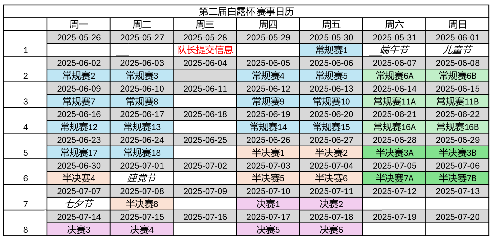

第二届白露杯 赛事指南

1. 参赛须知
- 本届比赛为团队赛，分为常规赛、半决赛、决赛三个阶段。
- 本届比赛时间为5月30日~7月18日，选秀时间为5月24日。
- 本届白露杯的队伍由选秀产生。队长和队员分别进行报名。
- 本届比赛参赛队员需加入以下群聊：
- 第二届白露杯选手交流群（群号1041254513）
- 【雀圣屋】雀魂交流群（群号767530085）或碳基生物雀魂交流群（群号826308876）。
- 本届比赛段位要求为雀士一星或以上。
- 本届比赛禁止一人多号，多人共用一号，禁止包括通牌、恶意组队、使用AI、屏幕共享在内的不正打行为。违规者一经发现，将酌情取消本届及未来鸭鸭杯的参赛资格。情节严重者将会被上报至联合黑名单。
- 在大鸭鸭其他赛事被禁赛且禁赛期未满的选手将无法参加本届比赛。
- 如果有任何疑问，请及时向主办方（QQ：2399275271）提出。一切解释权归主办方所有。
2. 赛事奖励
- 团队冠军赏：￥500
- 团队亚军赏：￥300
- 团队季军赏：￥100
- 常规赛MVP：￥50 + 第七届鸭鸭杯正赛直通资格
- 常规赛最高打点：￥30
- 常规赛避四赏：￥30
- 特殊赏——役满赏（和出役满/累计役满牌）：￥10/次
- 特殊赏——天狗食月（任意阶段使月明朝-60马点以下吃四的一位）：￥10
- 特殊赏——朵拉战士（单次和牌含有7张宝牌或以上）：￥10
- 特殊赏——野兽の心境（单个半庄得点8100或得点81000或单个半庄马点+81.0）：￥10
- 特殊赏——二进制（单个半庄最终得分仅包含1和0）：￥10
本届团队冠军可以在下届白露杯保留至多三名本届成员（含队长）。
除打点王及劳模赏外,其他特殊赏需自行截图发送主办并附上牌谱链接。
本届比赛开放特殊赏赞助，有意者请联系主办方（QQ：2399275271）。
常规赛奖赏评选规则：
- MVP：选手在常规赛需总计完成至少8个半庄，总打点最高者获奖。若打点相同，平均顺位低者优先，之后每场平均打点高者优先，之后平分奖金，不获得第六届鸭鸭杯正赛直通资格。
- 避四赏：选手在常规赛需总计完成至少8个半庄，四位率最低者获奖。若四位率相同，参赛场次多者优先，之后打点高者优先，之后平分奖金。
3. 比赛平台
- 雀魂麻将（https://game.maj-soul.com/1/）
- 赛事 ID： TBD
4. 报名须知
- 本届比赛参赛队员需加入以下群聊：
- 第二届白露杯选手交流群（群号1041254513）
- 【雀圣屋】雀魂交流群（群号767530085）或碳基生物雀魂交流群（群号826308876）。
- 比赛所有公告及选手对阵将发布于第二届白露杯选手交流群（群号1041254513）。
- 本届白露杯开放队长报名和队员报名。队长报名上限为【20】。
- 想要报名的队长/队员需要在5月21日18:00前准确填写报名表格。报名的队长需要额外加入赛事QQ频道（频道号：pd62450442）。
- 队长报名原则上先到先得，主办方保留预留部分名额的权力。
- 本届白露杯的队伍由选秀产生。所有队长必须参与5月24日19:00举行的选秀仪式。若无法参加请勿报名队长职位。
- 本届白露杯每队选手（队员+队长）数量为【6】。报名的队员存在没有被选中从而无法参赛的可能性。
- 若选手被发现未加入队员交流群或（雀圣屋或碳基生物）群，则选手将被剥夺本届白露杯的参赛资格。
5. 选秀仪式
- 选秀仪式直播将于5月24日19:00在赛事QQ频道（频道号：pd62450442）进行。所有队长必须参与选秀仪式。
- 所有报名的参赛选手（包括队员和队长）将根据雀魂/天凤段位分为两档。其中第一档60人，其余选手将进入第二档。
- 每支队伍（包括队长）最少拥有【2】位第一档选手和【2】位第二档选手。
仪式流程
- 第一轮选秀：
- 为盲选模式，所有队长提名一位队员加入自己的队伍。提名队员不限档次。
- 若无其他队伍选择提名队员则队员自动加入队伍。
- 若有至少两支队伍选择同一个队员则将进行随机抽签。抽中的队长将获得该队员，其余队长需要重新提名。
- 选手在队长名单公布后，5月23日20:00前，可私聊主办方（QQ：2399275271）指定一个队长白名单和/或两个队长黑名单：
- 白名单：进入白名单的队长若指名选手，该队长抽中选手概率增加100%
- 黑名单：进入黑名单的队长无法指名选手，赛管会告知队长要求换人
- 第2-5轮选秀：采用蛇形选秀顺序。队长通过随机抽签获得编号1-20。编号为1的队长最先挑选队员，以此类推直至编号20。之后由编号20的队长优先选人直到编号1。队长选人需要满足选手档次要求，主办在选秀时会提醒队长可以挑选哪些档次的队员。
- 第一届白露杯冠军可通过放弃第二、第三轮选秀从而直接指名最多【2】位队内选手
- 选秀结束后每队将会拥有【6】名选手。队长需要及时联系所有选手并在5月28日18:00前向主办提交队伍名称、队伍LOGO、队伍代表色（RGB格式）以及缺席队员名单（如果有）。
- 选秀仪式为单向指名。队员在获得队长指名后将直接进入该队伍，队员无选择权力。希望各位参赛者可以广结善缘，缺席队员将进入大鸭鸭比赛黑名单。
6. 比赛规则
- 起始点30000点，5+20秒，无击飞，无西入。
- 比赛全程有提示。
- AL 一位不完赛，马点30/10/-10/-30。
- 3 赤，无中途流局，无头跳，杠宝牌即开。
- 无流局满贯，有切上满贯（4番30符，3番60符=8000点）。
- 有大三元、大四喜、四杠子包牌，无大明杠包牌。
- 无累计役满，无多倍役满，有复合役满。
7. 比赛日安排
- 每个比赛日第一半庄于19:00开始，第二半庄于20:00开始。
- 每支队伍需要在比赛日18:00前将当天的出战选手通过队长群发送给主办。
- 每支队伍在比赛阶段会获得无理由换人机会，若有紧急情况在比赛当天18:00前向主办说明情况换人不占用无理由换人名额。
- 队伍在同一个比赛日若更换连斗的选手视为消耗一个无理由换人机会。
- 如果队伍没有无理由换人机会，且没有合理的换人理由或比赛当天18:00后申请换人则扣除队伍10分。
- 参赛选手需要提前10分钟进行报道，若迟到5分钟以上则处罚队伍10分，迟到10分钟以上则处罚队伍30分，迟到15分钟以上视为缺席，安排摸切电脑参赛并自动扣除50分或半庄实际分数（以分数更低者为准）。若有两支或以上队伍缺席则缺席队伍扣除50分或所有缺席队伍的平均半庄实际分数（以分数更低者为准）。其他队伍的分数不受影响。
- 队伍可以选择在10分钟内使用无理由换人名额安排队友上场。若在5分钟内提出换人且被换上选手在5分钟之内准备则队伍不受迟到处罚。若在10分钟内提出换人且被换上选手在5分钟之内准备，或在5分钟内提出换人且被换上选手在5-10分钟后准备则处罚队伍10分。
- 如果选手在比赛中途需要暂停需要及时@赛管，否则将视为未申请暂停。每次暂停时间最多为五分钟。
8. 赛程及赛制介绍
常规赛阶段： 5月30日~6月24日
- 常规赛共计21个比赛日，所有队伍将进行36个半庄的比赛。
- 比赛日安排请参见赛事日历（附录A）。
- 常规赛前【8】队伍积分减半后将晋级半决赛。
- 常规赛每支队伍有4次无理由换人机会。
半决赛阶段： 6月26日~7月8日
- 半决赛共计10个比赛日，所有队伍将进行16个半庄的比赛。
- 比赛日安排请参见赛事日历（附录A）。
- 半决赛前【4】队伍积分减半后将晋级决赛。
- 半决赛每支队伍有2次无理由换人机会。
决赛阶段： 7月10日~7月18日
- 决赛共计6个比赛日，所有队伍将进行12个半庄的比赛。
- 比赛日安排请参见赛事日历（附录A）。
- 决赛每支队伍有1次无理由换人机会。
队伍出场要求
- 常规赛结束前每队选手需至少出战3次，最多出战12次。
- 半决赛结束前每队选手需至少出战4次，最多出战15次。
- 决赛结束前每队选手需至少出战4次，最多出战18次。
9. 比赛直播
- 本届白露杯比赛部分场次将在哔哩哔哩和大鸭鸭TV进行实况直播。参加本届白露杯比赛即视为选手已了解并同意自己将可能出现在比赛直播画面中，同时视为授权白露杯官方进行比赛的直播评述。
- 若选手想要直播自己的白露杯比赛，可以无需向主办方申请，但必须开启五分钟延时。若主办方发现选手直播未开启延迟将按照屏幕共享处理。
附录A. 白露杯赛事日历
